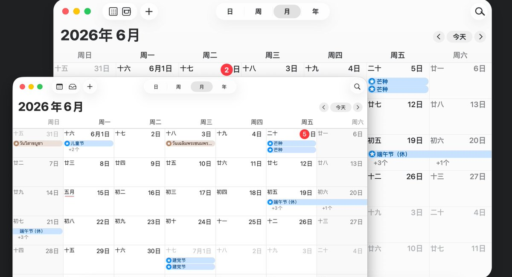

KY Design to HTML Skill：把 UI 截图还原成 HTML/CSS 的工作流技能
它不是 UI 生图 skill，而是把"可见 UI 参考图"拆成页面地图、视觉资产、画布比例和截图校正四步，专门服务 Codex / Claude 的界面还原任务。
X 帖主张：作者把多年项目介绍中的经验沉淀成一个 Skill，用来高质量还原"可见 UI 参考图"到 HTML/CSS。
README 事实：这套流程强调先拆页面地图，再分离代码结构和视觉资产，最后通过截图对比修正偏差。

一句话结论：它解决的不是"画一张图"，而是"别让 AI 在结构、样式、资产三件事上同时失控"
这类技能的价值不在于一次生成多快，而在于把容易翻车的还原任务拆成可检查的步骤。
核心判断
KY Design to HTML Skill 是一个面向已存在 UI 截图 / 设计稿的 HTML/CSS 还原技能；它的核心不是画风，而是流程：先拆结构，再分资产，再定画布比例，最后用截图验证和视觉误差修正把结果拉回去。
所以它更像"还原流水线"，而不是"UI 生图器"。
它为什么有用：把 AI 直接生成 HTML 的三重风险拆开处理
如果不拆任务，AI 会同时承担结构理解、样式复刻和资产绘制，任何一项失手都会导致页面变形。
"根据这张图生成 HTML"太粗
- 逼 AI 同时做三件事：理解页面结构、复刻视觉样式、画出复杂视觉资产
- 任何一件事失手都会让输出变形
先把任务拆开，再逐步收敛
- 哪些部分写成 HTML/CSS
- 哪些部分当作图片资产
- 浏览器和设计稿的画布比例
- 输出后如何截图验证误差
工作流不是概念，是明确的六步链路
这个 repo 的表达很工程化：先拆解页面地图，再分离资产，然后定画布，写代码，截图，再修正。
安装与使用：直接塞进 Codex / Claude 的技能目录即可调用
README 提供的是非常朴素的本地安装方式，门槛低，但前提是你已经在用这些 agent。
按 agent 放到对应 skills 目录
- Codex：
~/.codex/skills/ky-design-to-html - Claude：
~/.claude/skills/ky-design-to-html
直接让它重建 UI 截图
英文或中文都可以：
仓库结构本身就透露了技能的技术重点
它的目录不是泛泛的"工具包"，而是围绕资产处理和误差分类来组织的。
文件结构很短，目标明确
两个参考文件暴露了真正的工作重心
- asset-handling：先把可视资产和结构拆开
- visual-error-taxonomy：截图后知道"哪里不像"
- screenshot_page.py：说明它把验证当成流程一部分
适用边界：它适合复刻界面，不适合替你凭空发明界面
README 的定位非常克制：它针对"已有截图/设计稿"，不是"根据需求创作全新 UI"的那类 skill。
高保真还原已有 UI
- UI 截图 → HTML/CSS
- Landing page 设计稿 → 静态网页
- SaaS / 后台 / 空状态页面复刻
替代视觉设计或生图
- 它不是 UI 生图 skill
- 它不回避后续人工校准，反而依赖校准
- 如果没有真实参考图，优势迅速下降
最终评价：这是一个"把还原质量工程化"的 skill，不是炫技型 prompt
它的本质不是让 AI 一次出完美页，而是把最容易翻车的环节变成可观察、可回放、可修正的步骤。
价值
把"截图还原"从一次性生成，变成一条可重复执行的工程流程，尤其适合前端接图、设计稿落地、landing page 复刻。
边界
如果没有真实参考图，它的优势会迅速下降；如果只追求"生成速度"，而不接受后续截图校准，它也不合适。